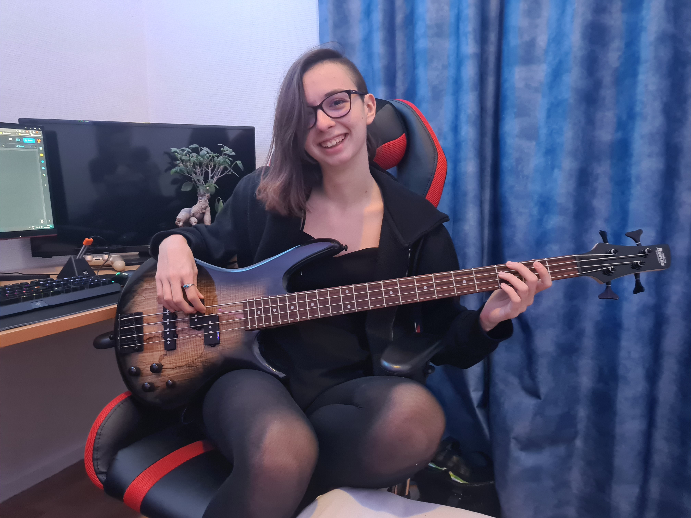

That's me!
Hello and welcome!
My name is Lisa Bourdon, and I was born in France 19 years ago in Châtenay-Malabry, although I have lived most of my life in Tours. I have always been interested in music, technology and video gaming, and if I had enough time, I would enjoy practicing athleticism.
I have graduated from high school with honors, earning my Economic and Social Sciences baccalaureate. For the past two years, I have been studying in the Internet and Media Studies' bachelor’s degree. The things that mainly drive me are a strong desire to learn and build things, and a hunger for self-betterment. I am currently working on a task organizer project in my spare time.
In the future, I would like to work in cybersecurity, as it is a field that I admire. I want to contribute to moving things forward in the world, and to overcome daily challenges that will push me to always be better through constant learning and innovation. It requires out-of-the-box thinking, and applying developed psychology tactics to succeed with either securing known vulnerabilities, or finding new ones.
Thank you very much for reading, and I look forward to possibly interacting with you!